visStatistics: The right test, visualised
Sabine Schilling
Institute of Tourism and Mobility, Lucerne University of Applied Sciences and Artssabineschilling@gmx.ch
2026-05-13
Source:vignettes/visStatistics.Rmd
visStatistics.RmdAbstract
visStatistics automatically selects and visualises
appropriate statistical tests between two column vectors of class
"numeric", "integer", or
"factor". No manual test selection is required: the
function determines the appropriate method from the data types and
distributional properties alone. The choice of test depends on the
class, distributional assumptions, and sample size of the
vectors.
The main function visstat() visualises the selected test
with appropriate graphs (box plots, bar charts, regression lines with
confidence bands, mosaic plots for Pearson’s
test, residual plots), annotated with the main test results, including
visualisations of the assumption checks and post-hoc analyses.
This scripted workflow is well suited for browser-based applications, where users interact only through a web interface, while server-side R applications handle the data processing.
Other typical use cases include quick visualisations, and guided statistical test selection, for example in statistical consulting or educational settings.
Introduction
Most routine data analyses reduce to a comparatively small set of
inferential frameworks, including group comparisons, contingency-table
analyses, and regression models Sato et al. (2017). visStatistics
selects out of these most commonly used “right test” by using a
reproducible decision framework based on the data’s distributional
assumptions and sample size. It visualises its decision by, where
appropriate, assumption-diagnostic plot and a descriptive plot with the
main test statistics annotated, and returns an R object whose
print() and summary() methods expose the
complete test results. The scripted workflow is well suited for
browser-based applications where sensitive data (such as highly
confidential medical records) is stored securely on a server and can not
be directly accessed by users. This approach was already successfully
applied to develop a medical scoring tool (Bijlenga et al. 2017). When
selecting tests for group comparisons, packages with overlapping scope
such as automatedtests (Zeevat 2025) and
compareGroups (Subirana, Sanz, and Vila 2014) base
their test selection on group‑wise normality assessments of the response
variable. But group-wise testing inflates the family-wise type I error rate: the
probability of at least one false rejection of normality grows with the
number of compared groups, leading to unnecessary switching to
non-parametric methods even when the linear model assumptions hold
globally. In contrast, visStatistics assesses the normality
of the overall model residuals, adhering to the general linear model
framework (Searle
1971).
Getting started
1. Install the latest development version from GITHUB
install_github("shhschilling/visStatistics")3. Minimal function call
The function visstat() accepts input in three ways:
# Standardised form (recommended):
visstat(x, y)
# Formula interface:
visstat(y ~ x, data = dataframe)
# Backward-compatible form:
visstat(dataframe, "namey", "namex")x and y must be vectors of class
"numeric", "integer", or
"factor".
In the formula interface, y ~ x specifies the
relationship, where y is the response variable and
x is the predictor, with both being column names in
dataframe.
In the backward-compatible form, "namex" and
"namey" must be character strings naming columns in
dataframe, which must themselves be of class
"numeric", "integer", or
"factor". Note that in the backward-compatible form the
second argument belongs to the response, the third to the predictor.
This is equivalent to writing:
visstat(dataframe[["namex"]], dataframe[["namey"]])Decision logic
Throughout the remainder, data of class "numeric" or
"integer" are referred to by their common mode
numeric, while data of class "factor" are
referred to as categorical. The significance level
,
used throughout for hypothesis testing, is defined as
1 - conf.level, where conf.level is a
user-controllable argument (defaulting to 0.95).
The choice of statistical tests performed by the function
visstat() depends on whether the data are numeric or
categorical, the number of levels in the categorical variable, the
distribution of the data, as well as the user-defined ‘conf.level’. The
common mathematical framework underlying Student’s t-test, Fisher’s
ANOVA and simple linear regression is described in the Appendix A.
The function prioritizes interpretable visual output and tests that
remain valid under the following decision logic. The following graph
gives an overview of all implemented tests based on their
class:

Overview of the implemented statistical tests based on the class of the variables.
A graphical summary of the decision logic used for numerical responses and categorical predictors resulting in comparisons of central tendencies is given in the figure below.

Decision tree used to select the appropriate statistical test for a categorical predictor and numeric response, based on the sample sizes, number of factor levels, normality, and homoscedasticity.
Numeric response and categorical predictor: Comparing central tendencies
When the response y is numeric and the predictor
x is categorical, a statistical hypothesis test comparing
central tendencies is selected. To check whether the assumptions of a
general linear model (see Appendix A) are fulfilled,
a linear model lm(y ~ x) is first fitted.
Normality testing of the residuals: The Shapiro–Wilk test (Shapiro and Wilk 1965) (
shapiro.test()) is performed on internally studentised residuals computed byrstandard(), which scales the raw residuals with an estimate of their standard deviation that accounts for the leverage of each observation (Cook and Weisberg 1982). The Shapiro–Wilk (SW) test is the most powerful for detecting non-normality across most distributions, especially with smaller sample sizes (Razali and Wah 2011; Ghasemi and Zahediasl 2012).Non parametric-tests: Only when SW the test rejects normality (), non-parametric tests are selected: the Wilcoxon rank-sum test (
wilcox.test()) for two groups, or the Kruskal–Wallis test (kruskal.test()) followed by the Holm adjusted pairwise Wilcoxon tests (pairwise.wilcox.test()) for more than two groups.-
Parametric tests: When there is insufficient evidence against normality () or when the sample sizes are large (more than 50 observations per group), parametric tests are selected. In large samples the central limit theorem ensures approximate normality of the sampling distribution of the mean. (Rasch, Kubinger, and Moder 2011; Lumley et al. 2002; Kwak and Kim 2017)
- Homoscedasticity: The Levene–Brown–Forsythe (L) test (implemented as
levene.test()) (Brown and Forsythe 1974) tests for homogeneous variances.When homogeneity is not rejected (): For two groups, Student’s t-test (
t.test()withvar.equal = TRUE) is applied; for more than two groups, Fisher’s one-way ANOVA (aov()) with Tukey’s Honestly Significant Differences (HSD) (TukeyHSD()) (Hochberg and Tamhane 1987) is applied.When homogeneity is rejected (): For two groups, Welch’s t-test (
t.test()withvar.equal = FALSE) is applied; for more than two groups, Welch’s heteroscedastic one-way ANOVA (oneway.test()) with Games-Howell post-hoc test (games.howell()) (Games and Howell 1976) is applied. Welch’s methods outperform their classical counterparts when variances differ (Moser and Stevens 1992; Fagerland and Sandvik 2009; Delacre, Lakens, and Leys 2017).
- Homoscedasticity: The Levene–Brown–Forsythe (L) test (implemented as
Regardless of sample size, assumption diagnostics are always displayed. Throughout this vignette, linear model refers to the classical Gaussian linear model framework (Searle 1971) underlying t-tests, ANOVA, and linear regression. When normality of residuals is met but homoscedasticity is rejected,
visstat()selects Welch methods and additionally displays group-wise normality diagnostics viavis_group_normality(), since Welch’s variance estimates are group-specific and the pooledlm()residuals are no longer the appropriate diagnostic under heteroscedasticity. These diagnostic plots enable users to visually assess whether assumptions are met and manually override the automated p-value-based test selection. The decision logic is based entirely on p-values and distributional assumptions; it does not assess practical relevance. Users should always report and interpret an appropriate effect size measure (e.g. Cohen’s for t-tests, for ANOVA, rank-biserial for Wilcoxon and Kruskal–Wallis tests) alongside the test result.
Both variables numeric: Simple linear regression (default) or
Spearman rank correlation (correlation = TRUE)
Simple linear regression (lm())
By default, visstat() always fits a simple linear
regression model (lm()) for two numeric variables,
regardless of whether the GLM assumptions of normality and
homoscedasticity are met. Assumption diagnostics are always shown,
enabling the user to assess whether the model is appropriate.
Correlation analysis is never triggered automatically; it requires the
explicit flag correlation = TRUE. Note that only
one predictor variable is allowed, as the function is designed
for two-dimensional visualisation.
In the linear regression branch, homoscedasticity is assessed using
the Breusch–Pagan test bp.test() (see Appendix B), which evaluates whether the variance
of the raw residuals depends on the predictor variable.
Spearman rank correlation (correlation = TRUE)
When correlation = TRUE is set, visstat()
uses Spearman’s
(cor.test(..., method = "spearman")) to measure the
monotone association between the two numeric variables. Switching to
correlation requires an explicit user choice, because the decision
between modelling a directional relationship (regression) and measuring
a monotone association (correlation) cannot be derived from the data
type alone. Spearman correlation operates on the ranks of the data
rather than the original values, making it robust to outliers and
non-normal distributions while detecting monotonic relationships.
Because Spearman’s
is Pearson’s
applied to the ranks, it yields nearly identical results to Pearson
correlation when the data are bivariate normal (the assumption of
Pearson’s inference) but remains valid without any distributional
assumptions. A separate Pearson branch is therefore not implemented.
When regression assumptions are violated, Spearman rank correlation
offers a robust, assumption-free alternative — at the cost of causal
interpretability. For alternatives not implemented in this package, see
Limitations.
Both variables of class factor
Comparing proportions (Chi-squared or Fisher’s exact test)
When both variables are categorical (and not ordered), no direction is assumed; the order of variables in the function call does not affect the test statistic, but it does influence the graphical output. For consistency, we continue referring to the variables as predictor and response.
visstat() tests the null hypothesis that the variables
are independent using either Pearson’s
test (chisq.test()) or Fisher’s exact test
(fisher.test()), depending on expected cell counts. The
choice of test is based on Cochran’s rule (Cochran 1954), which advises that
the
approximation is reliable only if no expected cell count is less than 1
and no more than 20 percent of cells have expected counts below 5.
Response of class ordered, predictor of class
factor
When the response variable is an ordered factor (e.g., Likert scale
ratings) and the predictor is categorical, visstat()
converts the ordered response to integer level codes and redirects the
analysis to the non-parametric wilcox.test() (predictor
with two levels) or kruskal.test() (predictor with more
than two levels) respectively, as the numeric distances between ordered
categories are not necessarily equal and the data cannot be assumed to
follow a normal distribution.
Both variables of class factor and
ordered: Wilcoxon/Kruskal-Wallis (default) or Kendall’s
(correlation = TRUE)
When correlation = FALSE (default) and both variables
are ordered factors, the response is converted to integer level codes
and the analysis follows the standard non-parametric path (Wilcoxon or
Kruskal–Wallis). When the research question concerns a monotone trend
between both ordered variables rather than group differences, the user
should consider switching to correlation = TRUE.
Kendall rank correlation (correlation = TRUE)
When correlation = TRUE is set, visstat()
converts both ordered factors to integer level codes, which are used
directly as ranks, and tests for a monotone association via Kendall’s
rank correlation (Kendall 1945; Agresti 2010). Kendall’s
is preferred over Spearman’s
for ordinal data with few levels, where ties are common:
corrects for ties explicitly, while Spearman’s
uses only an approximate adjustment Xu et al. (2013). The visualisation is a jittered
rank–rank scatter that makes the monotone trend visible, annotated with
and the
-value.
Assumption diagnostics: vis_lm_assumptions()
All tests within the linear model framework (see Appendix A) share the same set of assumptions:
Linearity: The expected value of the response is a linear function of the predictors; assessed by checking for systematic patterns in residual plots.
Error terms are independent, normally distributed with expectation value 0 and have constant error variance
The function vis_lm_assumptions() provides a unified
visual and statistical framework for validating the linear model
assumptions. It fits a linear model using aov() and
provides four standard diagnostic plots:
Histogram and Normal Density: Displays the distribution of standardised residuals with a red normal density curve overlay to visually assess normality.
Std. Residuals vs. Fitted: It shows the standardised residuals against fitted values with a zero-line to detect non-linearity or heteroscedasticity.
Normal Q-Q Plot: A theoretical quantile-quantile plot using the standardised residuals to identify deviations from the Gaussian distribution.
If
correlation = FALSE(regression mode), the Standardised Residuals vs. Leverage plot; ifcorrelation = TRUE(correlation mode), a Scale-Location plot.
Test for normality and homoscedasticity
The diagnostic plots are enhanced by p-values of tests for normality and homoscedasticity, shown in the title of the plot.
Normality Assessment: The function evaluates
residual normality using both the Shapiro–Wilk test
(shapiro.test()) and the Anderson–Darling test
(ad.test()) (Gross and Ligges 2015).
Anderson–Darling is particularly sensitive to tail deviations (Razali and Wah 2011; Yap and Sim 2011).
Homoscedasticity Assessment: Variance equality is
tested using the Levene-Brown-Forsythe test (levene.test())
(Brown and Forsythe
1974) and Bartlett’s test (bartlett.test()) in
the ANOVA path.
These tests compare the spread of data across different factor levels.
For simple linear regression, the Breusch-Pagan test
(bp.test()) is implemented.
These three tests have standalone implementations in the package to avoid dependencies on external packages (see Appendix B).
Implemented tests with examples
For all implemented tests, this section provides mathematical background and references. We report the definition of the test statistic, its distribution under the null hypothesis, and any relevant assumptions.
Numeric response and categorical predictor: Comparing central tendencies
Categorical predictor with two levels: Welch’s t-test and Wilcoxon rank-sum
Student’s t-test (t.test(var.equal = TRUE))
When var.equal = TRUE, R’s t.test() reports
its method as "Two Sample t-test"; this is the
same procedure that is commonly known as Student’s t-test, and
visstat() displays the R wording verbatim in the plot
title.
The test statistic for Student’s t-test is given by:
where and are the sample means, and are the sample sizes, and is the pooled standard deviation:
where and are the sample variances in the two groups. The test statistic follows a t-distribution with degrees of freedom.
Welch’s t-test (t.test())
Welch’s t-test relaxes the homoscedasticity assumption while maintaining the requirements for independent observations and normally distributed residuals. It evaluates the null hypothesis that the means of two groups are equal without assuming equal variances.
The test statistic is given by (Welch 1947; Satterthwaite 1946)
where and are the sample means, and the sample variances, and , the sample sizes in the two groups. The statistic follows a t-distribution with degrees of freedom approximated by the Welch-Satterthwaite equation:
The resulting p-value is computed from the t-distribution with degrees of freedom.
Wilcoxon rank-sum test (wilcox.test())
The two-sample Wilcoxon rank-sum test (also known as the Mann-Whitney test) is a non-parametric alternative that does not require the response variable to be approximately normally distributed within each group. It tests for a difference in location between two independent distributions (Mann and Whitney 1947). If the two groups have distributions that are sufficiently similar in shape and scale, the Wilcoxon rank-sum test can be interpreted as testing whether the medians of the two populations are equal (Hollander, Chicken, and Wolfe 2014).
The two-level factor variable x defines two groups, with
sample sizes
and
.
All
observations are pooled and assigned ranks from
to
.
Let
denote the sum of the ranks assigned to the group
corresponding to the first level of x containing
observations:
,
where is the rank of observation in the pooled sample.
The test statistic
returned by wilcox.test() is then computed as
It corresponds to the Mann-Whitney (Mann and Whitney 1947) statistic of the first group.
If both groups contain fewer than 50 observations and the data contain no ties, the p-value is computed exactly. Otherwise, a normal approximation with continuity correction is used.
The function returns a list containing the results of the applied test and the summary statistics used to construct the plot.
Examples
Welch’s t-test
The Motor Trend Car Road Tests dataset (mtcars)
contains 32 observations, where mpg denotes miles per (US)
gallon, and am represents the transmission type
(0 = automatic, 1 = manual).
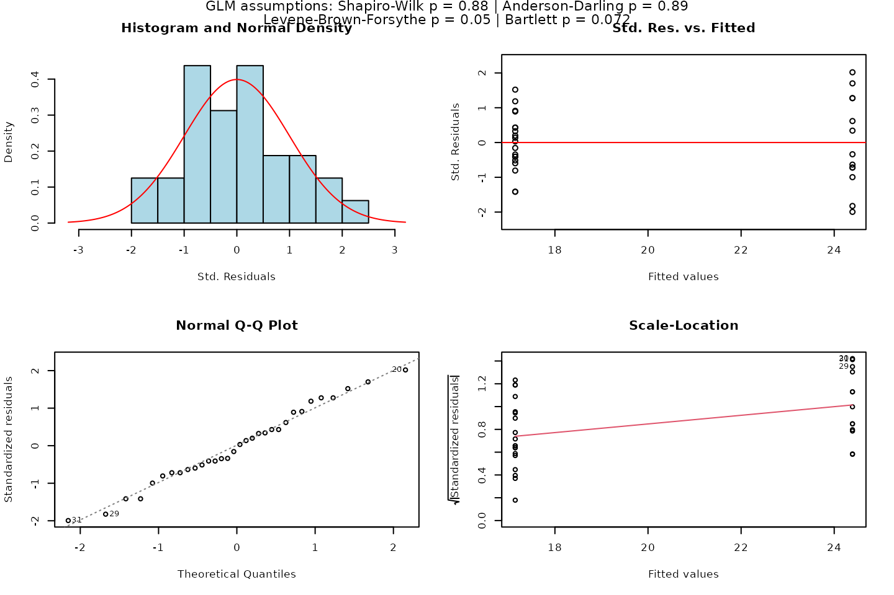
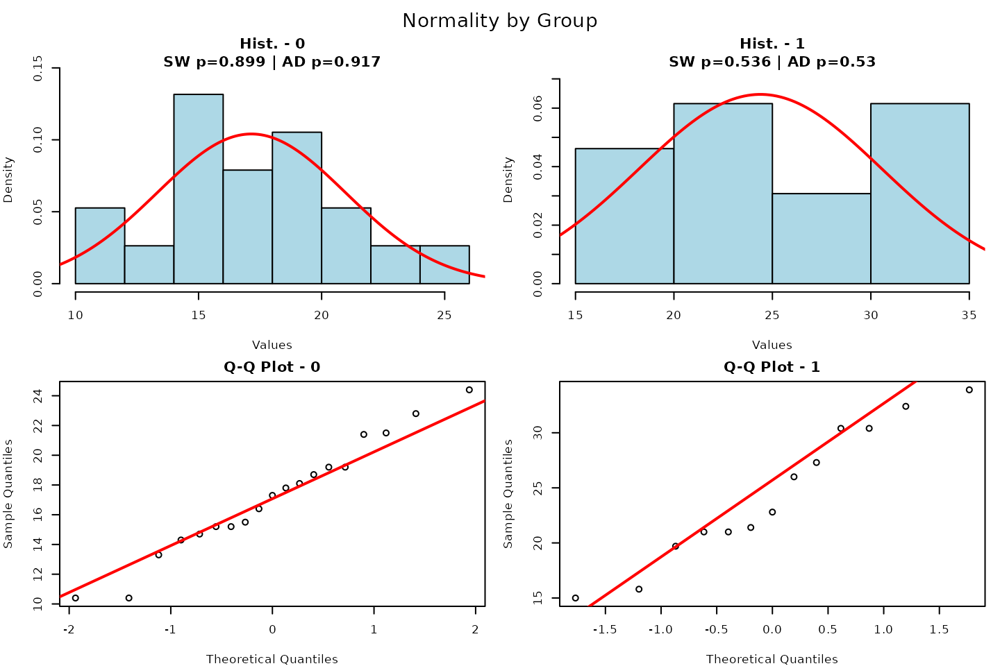
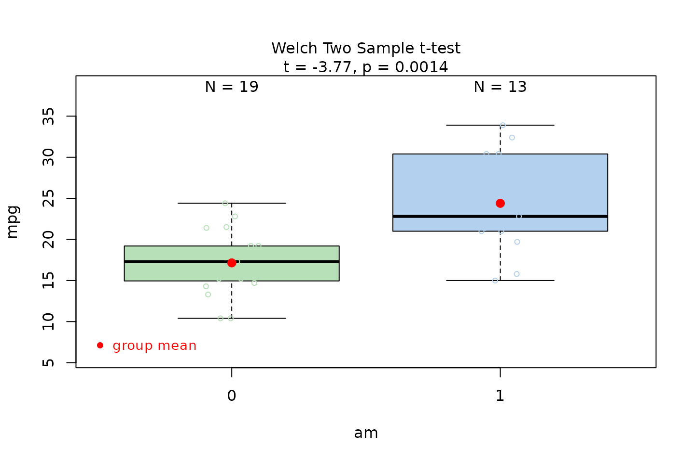
Wilcoxon rank sum test
The Wilcoxon rank sum test is exemplified on differences between the central tendencies of grades of “boys” and “girls” in a class:
grades_gender <- data.frame(
sex = as.factor(c(rep("girl", 21), rep("boy", 23))),
grade = c(
19.3, 18.1, 15.2, 18.3, 7.9, 6.2, 19.4,
20.3, 9.3, 11.3, 18.2, 17.5, 10.2, 20.1, 13.3, 17.2, 15.1, 16.2, 17.0,
16.5, 5.1, 15.3, 17.1, 14.8, 15.4, 14.4, 7.5, 15.5, 6.0, 17.4,
7.3, 14.3, 13.5, 8.0, 19.5, 13.4, 17.9, 17.7, 16.4, 15.6, 17.3, 19.9, 4.4, 2.1
)
)
wilcoxon_statistics <- visstat(grades_gender$sex, grades_gender$grade)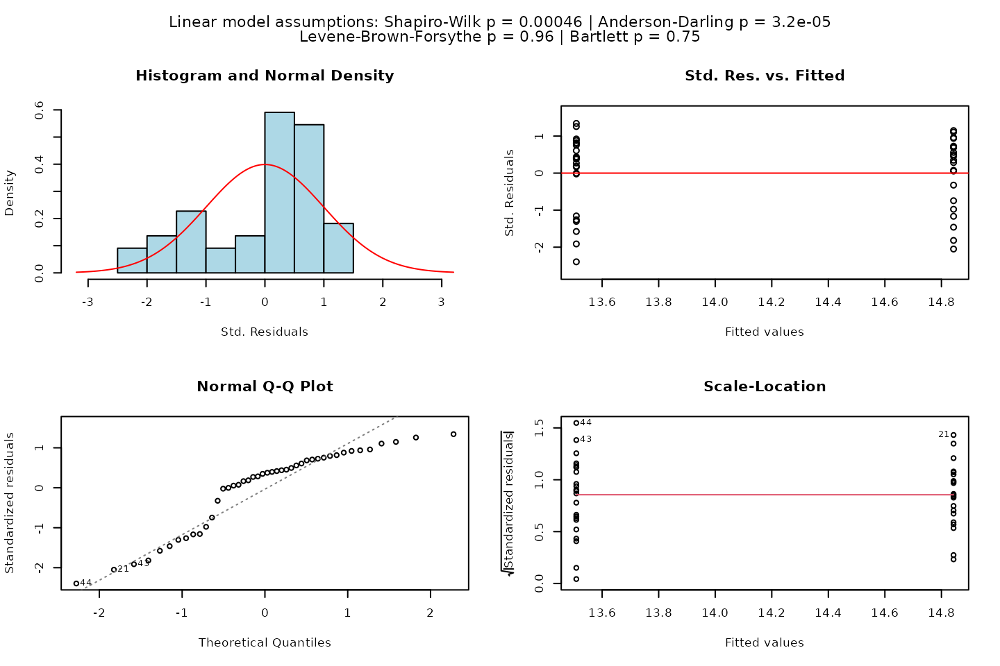
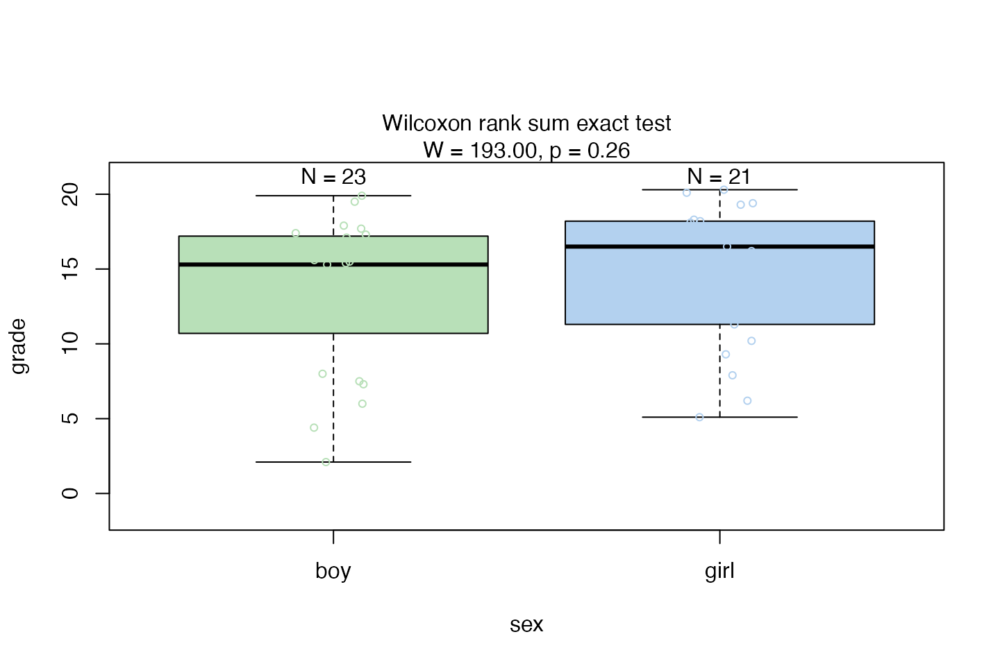
Wilcoxon with ordinal response
set.seed(123)
# Create predictor: Customer segment (2 groups)
segment <- factor(rep(c("Budget", "Premium"), each = 50))
# Create response: Likert scale ratings (1-5)
satisfaction_numeric <- c(
sample(1:5, 50, replace = TRUE, prob = c(0.15, 0.25, 0.30, 0.20, 0.10)), # Budget
sample(1:5, 50, replace = TRUE, prob = c(0.05, 0.10, 0.20, 0.35, 0.30)) # Premium
)
# Create dataframe with ORDERED response
survey_data <- data.frame(
segment = segment,
satisfaction = ordered(satisfaction_numeric) # Declare as ordered
)
# triggers warnings and use Wilcoxon test
wilcox_ordered <- visstat(survey_data, "satisfaction", "segment")## Warning: Ordered response detected. Converting to integer level codes for
## non-parametric analysis.Categorical predictor with more than two levels
Fisher’s one-way ANOVA (aov())
Fisher’s one-way ANOVA (aov()) tests the null hypothesis
that the means of
groups are equal.
As a linear model, it assumes independent observations, normally distributed residuals, and homogeneous variances across groups. The test statistic is the ratio of the variance explained by differences among group means (between-group variance) to the unexplained variance within groups (Ronald A. Fisher and Yates 1990)
where:
and are the mean square between groups and mean square within groups, respectively.
= Sum of Squares between groups (variance due to group differences)
= Sum of Squares within groups (error variance)
= number of groups
= total sample size
is the mean of group , is the overall mean, is the observation in group , is the sample size in group , is the number of groups, and is the total number of observations.
Under the null hypothesis, this statistic follows an F-distribution with two parameters for degrees of freedom: and : The resulting p-value is computed from this distribution.
Welch’s heteroscedastic one-way ANOVA
(oneway.test())
When only the assumptions of independent observations and normally
distributed residuals are met, but homogeneous variances across
groups cannot be assumed, Welch’s heteroscedastic one-way ANOVA
(oneway.test()) (Welch 1951) provides an alternative to
aov(). It compares group means using weights based on
sample sizes and variances. The degrees of freedom are adjusted using a
Satterthwaite-type approximation (Satterthwaite 1946), resulting
in an F-statistic with non-integer degrees of freedom. The Welch
F-statistic is calculated as (Welch 1951):
where are the weights (inverse variances), , is the weighted grand mean, is the number of groups, is the sample size of group , and is the variance of group .
Numerical relationships within the parametric tests defined by the decision logic above (including the identity in the equal-variance two-group case) are summarised in Appendix A.
Kruskal–Wallis test (kruskal.test())
When the assumption of normality is not met, the Kruskal–Wallis test provides a non-parametric alternative. It compares group distributions based on ranked values and tests the null hypothesis that the groups come from the same population — specifically, that the distributions have the same location (Kruskal and Wallis 1952). If the group distributions are sufficiently similar in shape and scale, then the Kruskal–Wallis test can be interpreted as testing for equality of medians across groups (Hollander, Chicken, and Wolfe 2014).
The test statistic is defined as:
where is the sample size in group , is the number of groups, is the average rank of group , is the total sample size, and is the average of all ranks. Under the null hypothesis, approximately follows a distribution with degrees of freedom.
Post-hoc analysis
ANOVA, Welch ANOVA, and Kruskal–Wallis are omnibus tests: a significant result tells us that some group differs, but not which. To identify the differing pairs we test all
pairwise comparisons among the
factor levels, defining a family of tests (Abdi 2007).
Without correction, the family-wise error rate—the probability of at
least one false rejection across the family—grows quickly with
.
Because the three omnibus tests rest on different assumptions,
visstat() pairs each with a different post-hoc procedure
and returns the corresponding adjusted p-values for every pairwise
comparison.
Following aov():
TukeyHSD()
When the residuals are normal and variances are homogeneous,
visstat() follows aov() with Tukey’s Honestly
Significant Differences procedure. TukeyHSD controls the family-wise
error rate via the studentised range distribution, which exploits the
common residual variance shared across pairs (Hochberg and Tamhane
1987). visstat() returns the HSD-adjusted
p-values for every pairwise mean comparison.
Following oneway.test():
games.howell()
When the residuals are normal but variances are heterogeneous, the
common-variance assumption of TukeyHSD breaks down.
visstat() therefore pairs Welch’s heteroscedastic
oneway.test() with the Games–Howell procedure, which is
appropriate under unequal variances and unequal sample sizes.
games.howell() uses separate variance estimates
for each pair and Welch-adjusted degrees of freedom (Games and Howell
1976). The returned object contains the Games–Howell-adjusted
p-values for every pairwise comparison.
Following kruskal.test():
pairwise.wilcox.test()
When normality is rejected, visstat() follows
kruskal.test() with pairwise.wilcox.test(),
which compares each pair of factor levels via the Wilcoxon rank-sum test
on ranks rather than means. The resulting p-values are adjusted for
multiplicity using Holm’s step-down method (Holm 1979): sorted ascending and tested
against thresholds that loosen with rank.
Graphical output
The graphical output for all tests based on a numeric response and a categorical predictor with more than two levels consists of two panels: the first focuses on the residual analysis, the second on the actual test chosen by the decision logic.
The residual panel addresses the assumption of normality, both graphically and through formal tests. It displays a scatter plot of the standardised residuals versus the predicted values, as well as a normal Q–Q plot comparing the sample quantiles to the theoretical quantiles. If the residuals are normally distributed, no more than of the standardised residuals should exceed approximately ; in the Q–Q plot the data points should approximately follow the red straight line.
The p-values of the formal tests for normality (Shapiro–Wilk and Anderson–Darling) as well as the tests for homoscedasticity (Bartlett’s and Levene Brown–Forsythe) are given in the title.
visstat() then illustrates, in the subsequent graph,
either the kruskal.test(), the oneway.test(),
or aov() result (see also Section “Decision logic”). In all
three branches the result is shown as box plots with the number of
observations per level above each box; the title gives the name of the
test that was run and its p-value (and, for the parametric branches, the
corresponding
statistic). When the largest group contains no more than 50
observations, individual data points are overlaid as a jittered strip
chart, making the raw distribution visible.
In every branch, pairs of groups whose adjusted post-hoc p-value
falls below
are marked with different green letters below the box plots;
pairs sharing a letter are not significantly different. The letters are
produced by multcompLetters() from the
multcompView package (Graves, Piepho, and with help from Sundar
Dorai-Raj 2026).
Besides the graphical output, visstat() returns a list
containing the relevant test statistics along with the corresponding
post-hoc-adjusted
-values
for all pairwise comparisons.
Examples
Fisher’s one-way ANOVA
The npk dataset reports the yield of peas (in pounds per
block) from an agricultural experiment conducted on six blocks. In this
experiment, the application of three different fertilisers – nitrogen
(N), phosphate (P), and potassium (K) – was varied systematically. Each
block received either none, one, two, or all three of the
fertilisers.
anova_npk <- visstat(npk$block,npk$yield,conf.level=0.95)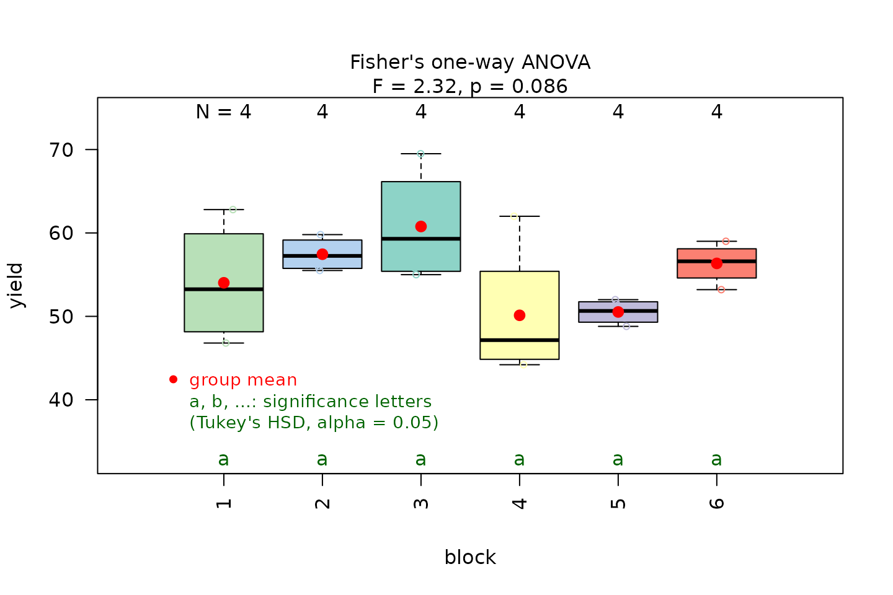
Normality of residuals is supported by graphical diagnostics
(histogram, scatter plot of standardised residuals, Q-Q plot) and formal
tests (Shapiro–Wilk and Anderson- Darling, both with
).
Homogeneity of variances is not supported at the given confidence level
by bartlett.test(), but by levene.test()
().
The decision logic is solely based on levene.test() and
triggers aov(). Post-hoc analysis with
TukeyHSD(). Note that the omnibus F-test reports p = 0.086
— not significant at
.
Therefore no pairwise differences are expected in the post-hoc analysis
and all groups share the same green letter “a”.
Kruskal–Wallis rank sum test
The iris dataset contains petal width measurements (in
cm) for three different iris species.
visstat(iris$Species, iris$Petal.Width)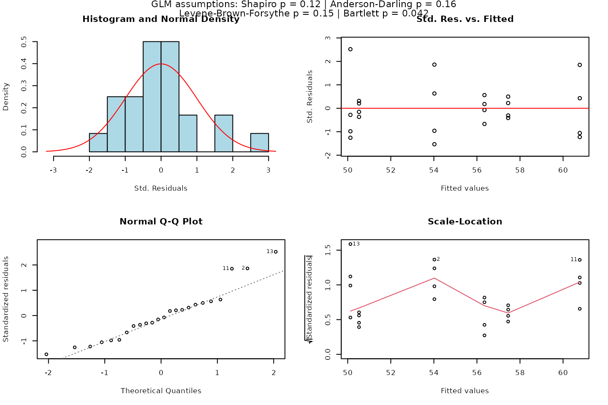
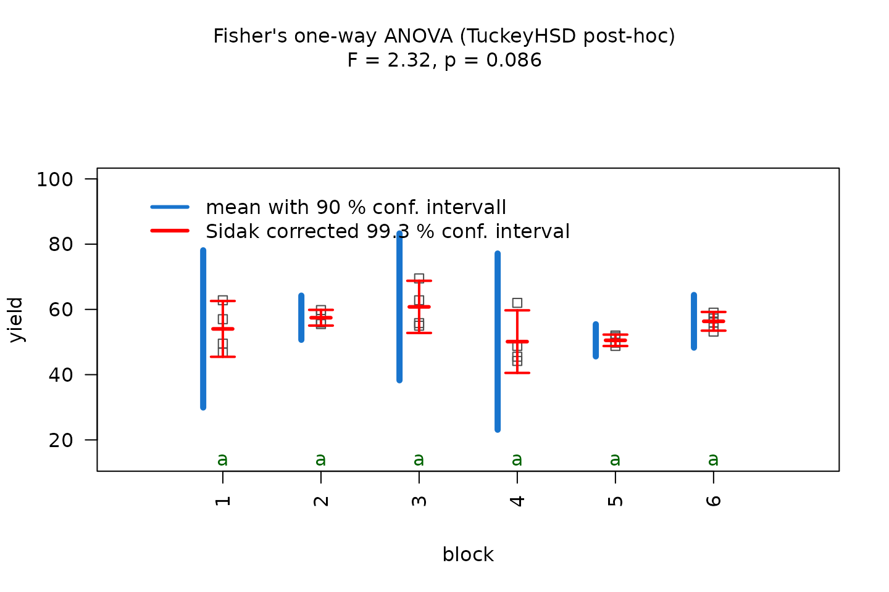
In this example, scatter plots of the standardised residuals and the Q-Q plot suggest that the residuals are not normally distributed. This is confirmed by very small p-values from both the Shapiro–Wilk and Anderson-Darling tests.
Since the Shapiro–Wilk p-value is below
,
visstat() switches to the non-parametric
kruskal.test(). Post-hoc analysis using
pairwise.wilcox.test() shows significant differences in
petal width between all three species, as indicated by distinct group
labels (all green letters differ).
Kruskal–Wallis with ordinal response
When the response is of class ordered and the predictor
is a categorical factor with more than two levels,
visstat() issues a warning, converts the ordered response
to integer level codes and routes the analysis to
kruskal.test() followed by
pairwise.wilcox.test().
set.seed(123)
# Predictor: customer segment (3 groups)
segment <- factor(rep(c("Budget", "Standard", "Premium"), each = 50))
# Response: Likert scale ratings (1-5), with a deliberate trend across segments
comfort_numeric <- c(
sample(1:5, 50, replace = TRUE, prob = c(0.30, 0.30, 0.20, 0.15, 0.05)), # Budget
sample(1:5, 50, replace = TRUE, prob = c(0.10, 0.20, 0.40, 0.20, 0.10)), # Standard
sample(1:5, 50, replace = TRUE, prob = c(0.05, 0.10, 0.20, 0.35, 0.30)) # Premium
)
# Dataframe with ORDERED response
survey_data_3 <- data.frame(
segment = segment,
comfort = ordered(comfort_numeric) # Declare as ordered
)
# triggers warning and uses Kruskal-Wallis test
kruskal_ordered <- visstat(survey_data_3, "comfort", "segment")## Warning: Ordered response detected. Converting to integer level codes for
## non-parametric analysis.Both variables numeric
Simple linear regression (lm())
The regression plot displays the point estimate of the regression line
where is the response variable, is the predictor variable, is the intercept, and is the slope of the regression line.
Residual analysis
visstat() checks the normality of the standardised
residuals from lm() both with diagnostic plots and using
the Shapiro–Wilk and Anderson-Darling tests. (via
vis_lm_assumptions())
Note, that regardless of the result of the residual analysis,
visstat() proceeds to perform the regression. The title of
the graphical output indicates the chosen confidence level
(conf.level), the estimated regression parameters with
their confidence intervals and p-values, and
.
The plot displays the raw data, the fitted regression line, and both the
confidence and prediction bands corresponding to the specified
conf.level.
visstat() returns a list containing the regression test
statistics, the p-values from the normality tests of the standardised
residuals, and the pointwise estimates of the confidence and prediction
bands.
Examples
swiss dataset
The swiss dataset records standardised fertility and
socioeconomic indicators for 47 French-speaking Swiss provinces in 1888.
We examine how the share of draftees achieving the highest army
examination score (Examination) predicts the fertility
measure (Fertility).
linreg_swiss <- visstat(swiss$Examination, swiss$Fertility, conf.level = 0.99)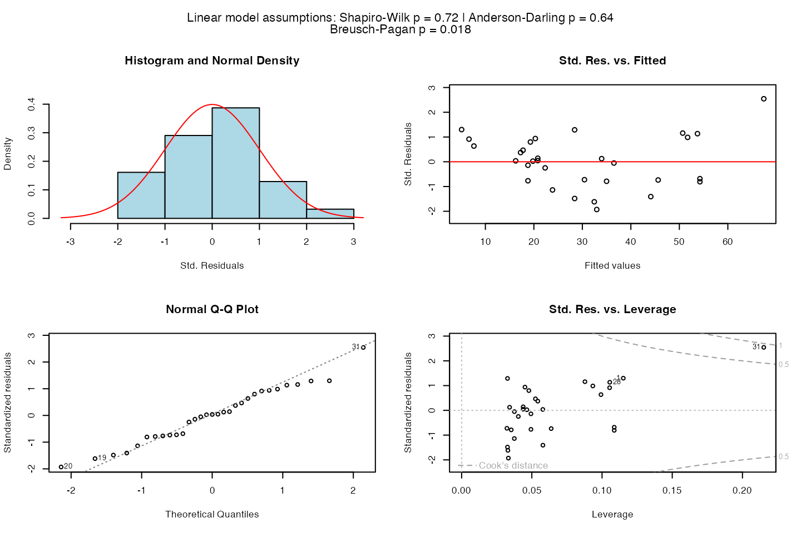
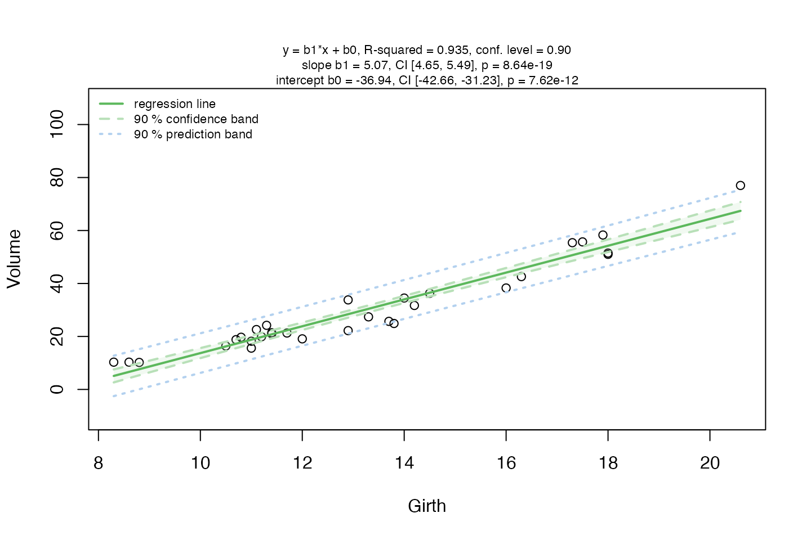
Both normality tests pass () and the Breusch–Pagan test confirms homoscedasticity, validating the linear model.
Spearman rank correlation
(cor.test(..., method = "spearman"))
For two numeric variables with correlation = TRUE,
visstat() calls
cor.test(x, y, method = "spearman") to measure the
monotonic association between
and
using ranks, evaluating linear dependence on the ranked data rather than
on the original scale:
where denotes Pearson’s correlation coefficient:
For inference, cor.test(..., method = "spearman")
computes an exact p-value for small samples without ties by evaluating
all
rank permutations. For larger samples or when ties are present, it uses
an approximation to the null distribution of the test statistic. No
distributional assumption on the original data is required.
Example
The airquality dataset contains daily air quality
measurements in New York, May to September 1973 (Chambers
2018)
A default call to visstat() fits a simple linear
regression model, but triggers the following warning:
result_ozone0 <- visstat(airquality$Wind, airquality$Ozone)## Warning: Statistical assumptions violated:
## Normality of residuals violated (Shapiro-Wilk p = 0.00522 )
## Homoscedasticity violated (Breusch-Pagan p = 0.00595 )
## Analysis proceeded but interpret results cautiously.## RECOMMENDATION: Consider exploring alternatives outside visstat() such as data transformations, generalised linear models, or robust regression. For an assumption-free, non-causal alternative consider rerunning with correlation = TRUE.The warning reports violated normality and homoscedasticity and
recommends two paths: rerun with correlation = TRUE within
visstat(), or switch to a model outside it.
Staying within visstat(),
correlation = TRUE gives an assumption-free result at the
cost of causality:
result_ozone1 <- visstat(airquality$Wind, airquality$Ozone, correlation = TRUE)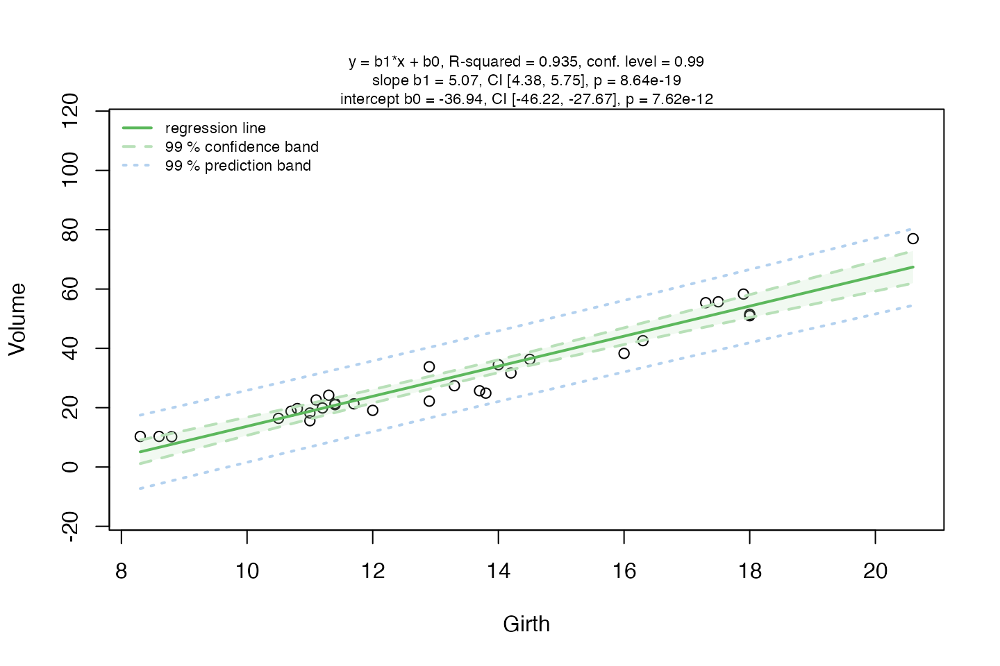
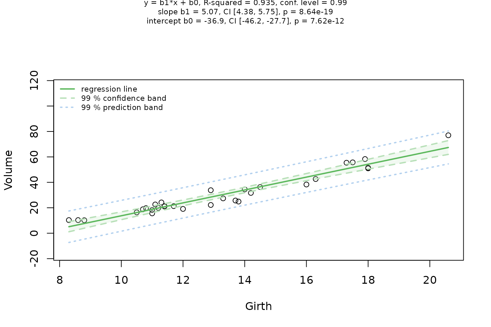
To preserve causality, we follow the second path and fit a Gamma generalised linear model with log link. The Gamma family is suited here because Ozone is strictly positive and continuous, and its variance grows with the mean — the structure detected by the Breusch–Pagan test. The log link (not the canonical inverse link) is preferred in practice as it guarantees positive fitted values.
# Remove zeros to satisfy Gamma requirements
airquality_clean <- subset(airquality, Ozone > 0)
# Gamma model with log mapping
model_gamma <- glm(Ozone ~ Wind, data = airquality_clean, family = Gamma(link = "log"))
summary(model_gamma)##
## Call:
## glm(formula = Ozone ~ Wind, family = Gamma(link = "log"), data = airquality_clean)
##
## Coefficients:
## Estimate Std. Error t value Pr(>|t|)
## (Intercept) 4.8155 0.1730 27.830 < 2e-16 ***
## Wind -0.1196 0.0165 -7.247 5.42e-11 ***
## ---
## Signif. codes: 0 '***' 0.001 '**' 0.01 '*' 0.05 '.' 0.1 ' ' 1
##
## (Dispersion parameter for Gamma family taken to be 0.4002672)
##
## Null deviance: 74.757 on 115 degrees of freedom
## Residual deviance: 50.432 on 114 degrees of freedom
## AIC: 1040
##
## Number of Fisher Scoring iterations: 8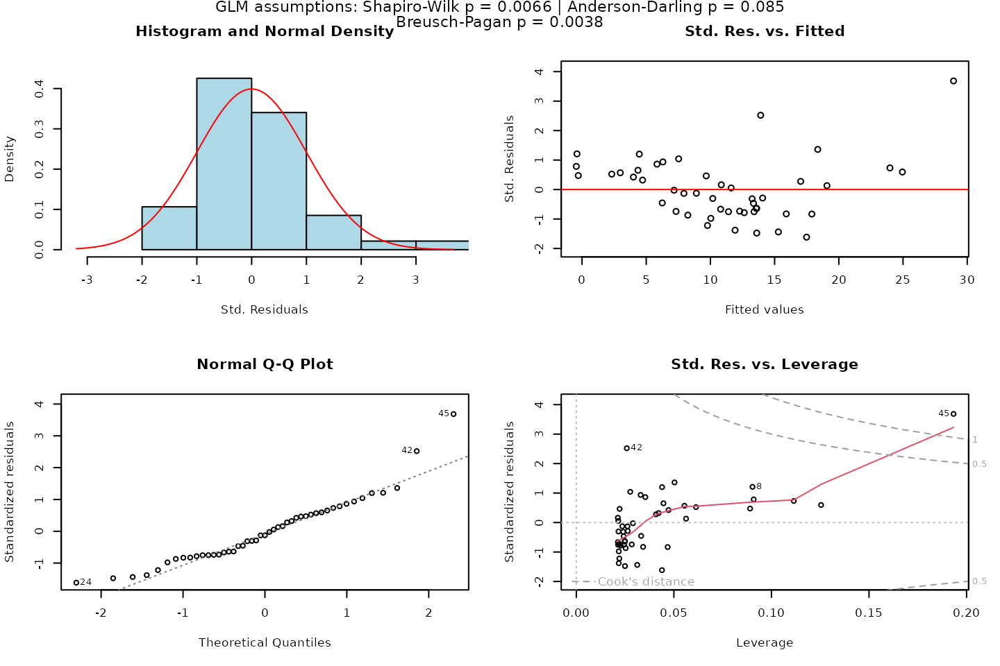
For a well-fitting Gamma generalised linear model, standardised deviance residuals are asymptotically standard normal; we use Shapiro–Wilk and Anderson–Darling as approximate checks.
# Extract standardised residuals
std_dev_res <- rstandard(model_gamma, type = "deviance")
# Validate using the Shapiro-Wilk normality test
shapiro.test(std_dev_res)##
## Shapiro-Wilk normality test
##
## data: std_dev_res
## W = 0.99245, p-value = 0.7817
# Validate using the Anderson-Darling normality test
nortest::ad.test(std_dev_res)##
## Anderson-Darling normality test
##
## data: std_dev_res
## A = 0.198, p-value = 0.8853Both variables categorical: Comparing proportions
Observed frequencies are arranged in a contingency table, where rows
index the levels
of the response variable and columns index the levels
of the predictor variable. visstat() tests the null
hypothesis that the two variables are independent.
Pearson’s
-test
(chisq.test())
Let and denote the observed and expected frequencies in row and column of an contingency table. The Pearson residual for each cell is defined as
The test statistic of Pearson’s -test (Pearson 1900) is the sum of squared Pearson residuals:
The test statistic is compared to the chi-squared distribution with degrees of freedom. The resulting p-value corresponds to the upper tail probability — that is, the probability of observing a value greater than or equal to the test statistic under the null hypothesis.
For general
tables, visstat() supplements the bar chart with a mosaic
plot (Meyer, Zeileis,
and Hornik 2006; Meyer et al.
2024), in which the area of each tile is proportional to the
observed cell frequency and tiles are coloured by their Pearson residual
:
blue for positive residuals (observed exceeds expected) and red for
negative ones (observed falls short of expected). This makes the cells
driving the association immediately visible.
Pearson’s test with Yates’ continuity correction
Pearson statistic in contingency tables (resulting in only one degree of freedom) tends to overestimate the significance level of the test.
To correct for this, Yates proposed subtracting 0.5 from each absolute difference between observed and expected counts (Yates 1934), resulting in a smaller test statistic:
This reduced test statistic yields a larger p-value, thereby lowering the risk of a Type I error.
Yates’ continuity correction is applied by default to
contingency tables with one degree of freedom by the underlying routine
chisq.test().
Fisher’s exact test (fisher.test())
The
approximation is considered reliable only if no expected cell count is
less than 1 and no more than 20% of cells have expected counts below 5
(Cochran
1954). If this condition is not met, Fisher’s exact test
(Ronald Aylmer Fisher
1970) (fisher.test()) is applied instead.
The test calculates an exact
-value
by conditioning on the observed margins of an
contingency table. To maintain consistency with the y ~ x
(response ~ predictor) framework used throughout
visStatistics, the rows
()
represent the levels of the response variable
and the columns
()
represent the levels of the predictor
.
The row totals are defined as
and the column totals as
,
for
and
.
In the case (), the table is structured as follows:
The exact probability of observing this table under the null hypothesis of independence, given the fixed margins, is given by the hypergeometric probability mass function (PMF):
where is the total sample size. The -value is computed by summing the probabilities of all tables with the same margins whose probabilities under the null are less than or equal to that of the observed table.
For general
tables, fisher.test() generalises this approach using the
multivariate hypergeometric distribution.
For
tables, fisher.test() additionally returns the conditional
maximum likelihood estimate of the odds ratio
.
Given the orientation where rows are the response
,
the odds of observing response level
(relative to
)
in predictor group
are
,
and the corresponding odds in group
are
.
The odds ratio is thus:
This estimate and its confidence interval are accessible as
$estimate and $conf.int in the returned
visstat object. ### Test choice and graphical output
If the expected frequencies are sufficiently large - specifically, if
at least 80% of the cells have expected counts greater than 5 and no
expected count is smaller than 1, the function uses Pearson’s
-test
(chisq.test()).
Otherwise, it switches to Fisher’s exact test
(fisher.test()) (Cochran 1954).
For 2-by-2 contingency tables, Yates’ continuity correction (Yates 1934) is always applied to Pearson’s -test.
The graphical output depends on the selected test:
- Pearson’s test (general tables): a grouped column plot showing row percentages with the -value in the title, followed by a mosaic plot with colour-coded Pearson residuals.
- Pearson’s test with Yates’ continuity correction ( tables): a grouped column plot showing row percentages with the -value in the title.
- Fisher’s exact test: a grouped column plot showing absolute counts with labels above each bar and the -value in the title.
Transforming a contingency table to a data frame
The following examples for tests of categorical predictor and
response are all based on the HairEyeColor contingency
table.
Contingency tables must be converted to the required column-based
data.frame using the helper function
counts_to_cases(). The function transforms the contingency
table HairEyeColor into data.frame named
HairEyeColourDataFrame.
HairEyeColourDataFrame <- counts_to_cases(as.data.frame(HairEyeColor))Examples
In all examples of this section, we will test the null hypothesis that hair colour (“Hair”) and eye colour (“Eye”) are independent of each other.
Pearson’s
-test
(chisq.test())
hair_eye_colour_df <- counts_to_cases(as.data.frame(HairEyeColor))
visstat(hair_eye_colour_df$Eye, hair_eye_colour_df$Hair)
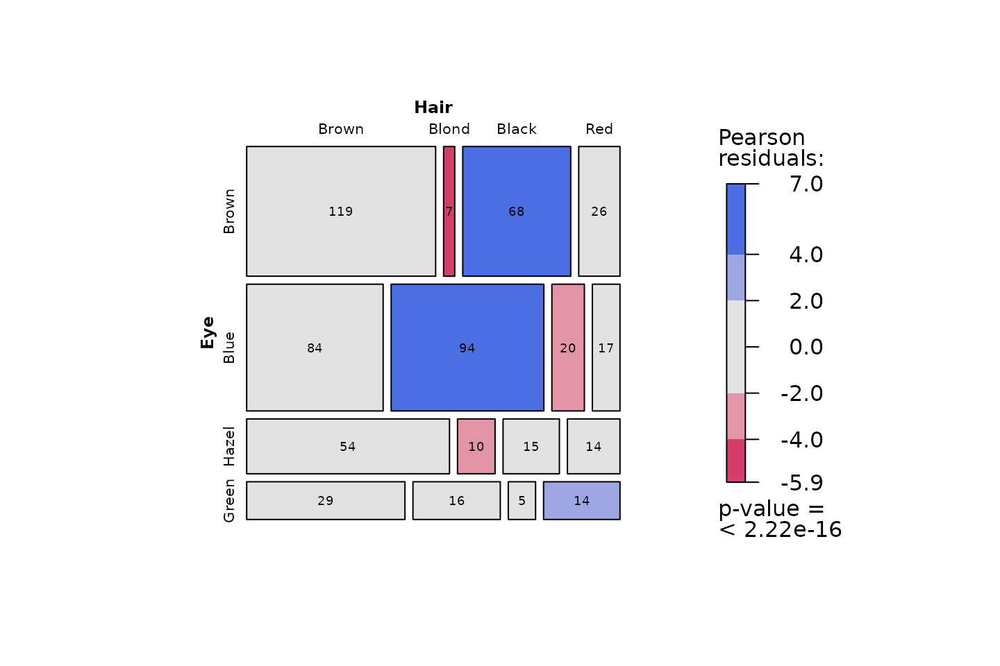
The graphical output shows that the null hypothesis of Pearson’s test – namely, that hair colour and eye colour are independent – must be rejected at the default significance level (). The mosaic plot indicates that the strongest deviations are due to over-representation of individuals with black hair and brown eyes, and of those with blond hair and blue eyes. In contrast, individuals with blond hair and brown eyes are the most under-represented.
Pearson’s -test with Yates’ continuity correction
In the following example, we restrict the data to participants with either black or brown hair and either brown or blue eyes, resulting in a 2-by-2 contingency table.
hair_black_brown_eyes_brown_blue <- HairEyeColor[1:2, 1:2, ]
# Transform to data frame
hair_black_brown_eyes_brown_blue_df <- counts_to_cases(as.data.frame(hair_black_brown_eyes_brown_blue))
# Chi-squared test with Yates' continuity correction
visstat(hair_black_brown_eyes_brown_blue_df$Eye, hair_black_brown_eyes_brown_blue_df$Hair)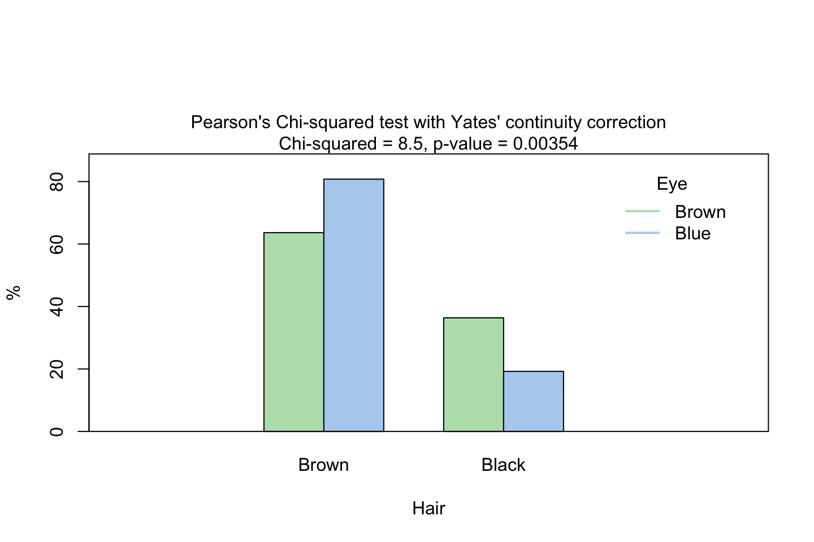
Also in this reduced dataset we reject the null hypothesis of independence of the hair colours “brown” and “black” from the eye colours “brown” and “blue”. As a table, Yates’ continuity correction is applied and no mosaic plot is produced. Note that the Yates-corrected -value is slightly higher than the uncorrected Pearson -value, reflecting the more conservative correction.
Fisher’s exact test (fisher.test())
Again, we extract a 2-by-2 contingency table from the full dataset, this time keeping only male participants with black or brown hair and hazel or green eyes.
Pearson’s test applied to this table would yield an expected frequency less than 5 in one of the four cells (25% of all cells), which violates the requirement that at least 80% of the expected frequencies must be 5 or greater (Cochran 1954).
Therefore, visstat() automatically selects Fisher’s
exact test instead.
hair_eye_colour_male <- HairEyeColor[, , 1]
# Slice out a 2 by 2 contingency table
black_brown_hazel_green_male <- hair_eye_colour_male[1:2, 3:4]
# Transform to data frame
black_brown_hazel_green_male <- counts_to_cases(as.data.frame(black_brown_hazel_green_male))
# Fisher test
fisher_stats <- visstat(black_brown_hazel_green_male$Eye, black_brown_hazel_green_male$Hair)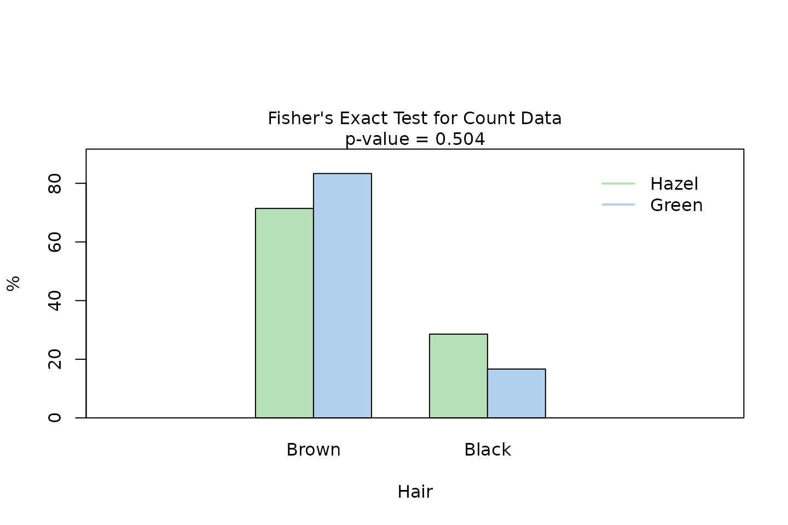
For this table, the odds ratio and its 95% confidence interval are available in the returned object:
fisher_stats$estimate # odds ratio## odds ratio
## 0.5062015
fisher_stats$conf.int # 95% CI## [1] 0.07725895 2.40885255
## attr(,"conf.level")
## [1] 0.95Response of class ordered, predictor of class
factor
When the response is an ordered factor, visstat()
converts it internally to integer level codes and redirects to the
non-parametric path (see examples in Section Comparing central
tendencies).
Both variables of class factor and
ordered: Wilcoxon/Kruskal-Wallis (default) or Kendall’s
(correlation = TRUE)
When both the response and the predictor are ordered factors and
correlation = TRUE is set, visstat() tests the
null hypothesis of no monotone association via Kendall’s
rank correlation (Kendall 1945; Agresti 2010). Without
correlation = TRUE, both-ordered inputs follow the standard
non-parametric path (Wilcoxon or Kruskal–Wallis).
Kendall’s
(cor.test(..., method = "kendall"))
For two ordinal variables with joint observations, let denote the number of concordant pairs (those whose ranks agree in both variables) and the number of discordant pairs. Kendall’s is defined as
where , summed over groups of tied ranks in the response, and is the analogous quantity for the predictor. The denominator correction makes attain even with ties, which Spearman’s does not (Kendall 1945). With few ordered levels (e.g., five-point Likert items), ties are unavoidable; this is the principal reason to prefer over Spearman’s in this setting (Agresti 2010).
visstat() calls
cor.test(as.numeric(y), as.numeric(x), method = "kendall", exact = FALSE)
and reports
,
the test statistic
,
and the two-sided
-value.
Graphical output
One plot is produced: a jittered rank–rank scatter that visualises the monotone trend, with points colour-coded by the predictor level and annotated with and the -value.
Example
We construct a hypothetical survey of 150 secondary-school students in which alcohol consumption frequency and academic performance are each recorded on a five-point ordinal scale. A negative monotone association is expected: students who consume alcohol more frequently tend to achieve lower academic performance.
set.seed(42)
n <- 150
# Latent scores with deliberate negative monotone association:
# higher alcohol consumption (xs) -> lower academic performance (ys)
xs <- sample(1:5, n, replace = TRUE)
ys <- pmin(5, pmax(1, (6 - xs) + sample(-1:1, n, replace = TRUE)))
likert_levels <- c("never", "rarely", "sometimes", "often", "always")
likert_levels2 <- c("poor", "fair", "ok", "good", "great")
alcohol <- ordered(likert_levels[xs], levels = likert_levels)
performance <- ordered(likert_levels2[ys], levels = likert_levels2)
kendall_result <- visstat(performance, alcohol, correlation = TRUE)
Saving the graphical output
All generated graphics can be saved in any file format supported by
Cairo() (Urbanek and Horner 2025), including
“png”, “jpeg”, “pdf”, “svg”, “ps”, and “tiff” in the user specified
plotDirectory.
If the optional argument plotName is not given, the
naming of the output follows the pattern
"testname_namey_namex.", where "testname"
specifies the selected test and "namey" and
"namex" are character strings naming the selected data
vectors y and x, respectively. The suffix
corresponding to the chosen graphicsoutput (e.g.,
"pdf", "png") is then concatenated to form the
complete output file name.
In the following example, we store the graphics in png
format in the plotDirectory tempdir() with the
default naming convention:
# Graphical output written to plotDirectory: In this example
# a single bar chart showing absolute counts.
# Output file: chi_squared_or_fisher_Hair_Eye.png
save_fisher = visstat(black_brown_hazel_green_male$Eye, black_brown_hazel_green_male$Hair,
graphicsoutput = "png", plotDirectory = tempdir())The full file path of the generated graphics are stored as the
attribute "plot_paths" on the returned object of class
"visstat".
## [1] "/var/folders/5c/n85wqnh95l50qbp3s9l0rp_w0000gn/T//Rtmpb6Y1f7/chi_squared_or_fisher_Hair_Eye.png"Remove the graphical output from plotDirectory:
file.remove(paths)## [1] TRUEWhen assumptions plots (residual and Q-Q plot) are generated, the
corresponding plot has the prefix "assumption_".
The visstat methods
Objects returned by visstat() are of class
"visstat" and support the S3 methods print(),
summary(), and plot().
print() and summary()
print() displays the test used and the p-value;
summary() provides the full contents of the returned
object, including assumption tests and post-hoc comparisons.
iris_kruskal <- visstat(iris$Species, iris$Petal.Width)
print(iris_kruskal)## Object of class 'visstat'
##
## Available components:
## [1] "Kruskal Wallis rank sum test"
## [2] "post-hoc by pairwise Wilcoxon rank sum test "
summary(iris_kruskal)## Summary of visstat object
##
## --- Named components ---
## [1] "Kruskal Wallis rank sum test"
## [2] "post-hoc by pairwise Wilcoxon rank sum test "
##
## --- Contents ---
##
## $Kruskal Wallis rank sum test:
##
## Kruskal-Wallis rank sum test
##
## data: samples by fact
## Kruskal-Wallis chi-squared = 131.19, df = 2, p-value < 2.2e-16
##
##
## $post-hoc by pairwise Wilcoxon rank sum test :
## [[1]]
## diff lwr upr p adj
## versicolor-setosa NA NA NA 0
## virginica-setosa NA NA NA 0
## virginica-versicolor NA NA NA 0
plot()
When visstat() is called with
graphicsoutput specified, plot() lists the
file paths of the stored graphics:
iris_kruskal_stored <- visstat(iris$Species, iris$Petal.Width,
graphicsoutput = "pdf",
plotName = "iris_kruskal",
plotDirectory = tempdir())
plot(iris_kruskal_stored)## Plot [1] stored in /var/folders/5c/n85wqnh95l50qbp3s9l0rp_w0000gn/T//Rtmpb6Y1f7/glm_assumptions_iris_kruskal.pdf## Plot [2] stored in /var/folders/5c/n85wqnh95l50qbp3s9l0rp_w0000gn/T//Rtmpb6Y1f7/iris_kruskal.pdfWhen visstat() is called without
graphicsoutput (the default interactive mode), the
generated plots are captured internally. Calling plot()
without which lists the available plots; calling
plot() with which replays the selected plot in
the interactive R session:
plot(iris_kruskal)## Plot [1] captured. Use plot(obj, which = 1) to display.## Plot [2] captured. Use plot(obj, which = 2) to display.
# Interactive only (not executed during vignette build):
plot(iris_kruskal, which = 2)## [1] TRUE TRUELimitations
Default settings
The main purpose of this package is a decision-logic based automatic
selection visualisation of the “right” statistical test. Therefore,
except for the user-adjustable conf.level parameter, all
statistical tests are applied using their default settings from the
corresponding base R functions. As a consequence, paired tests are
currently not supported and visstat() does not allow to
study interactions terms between the different levels of an independent
variable in an analysis of variance. Focusing on the graphical
representation of tests, only simple linear regression is implemented,
as multiple linear regressions cannot be visualised. When regression
assumptions are violated, the package offers Spearman rank correlation
(correlation = TRUE) as the sole alternative to linear
regression. Alternative methods such as data transformation, generalised
linear models or robust regression are not implemented: each requires
user judgment — about the transformation family, the link function, or
the estimator — that cannot be automated without substantially expanding
the decision tree and increasing the risk of Type I error inflation.
Test decisions based solely on p-values of statistical tests
No single test maintains optimal Type I error rates and statistical power across all distributions (Olejnik and Algina 1987), and p-values obtained from these tests may be unreliable if their assumptions are violated.
Assessing assumptions solely through p-values can lead to both type I errors (false positives) and type II errors (false negatives). In large samples, even minor, random deviations from the null hypothesis can result in statistically significant p-values, leading to type I errors. Conversely, in small samples, substantial violations of the assumption may not reach statistical significance, resulting in type II errors (Kozak and Piepho 2018).
Moreover, assumption tests provide no information on the nature of
deviations from the expected distribution (Shatz 2024). Thus the assessment of
normality or homoscedasticity should never rely solely on p-values but
should be complemented by visual inspection of the diagnostic plots
generated by visstat().
Testing normality with the Shapiro–Wilk normality test
Normality tests behave poorly at both ends of the sample-size range: with small samples they fail to detect non-normality, and with large samples they flag negligible departures from normality as significant (Ghasemi and Zahediasl 2012; Fagerland 2012; Franc 2025).
This package uses per group as a rule of thumb threshold to omit normality testing, assuming parametric tests of central tendencies to become robust to non-normality at larger sample sizes based on the central limit theorem. The threshold is necessarily arbitrary; simulation studies show that the convergence rate depends on the skewness and kurtosis of the underlying distribution, with moderately skewed distributions requiring roughly 40–50 observations for adequate convergence of the sampling distribution of the mean (Fagerland 2012). Simulation studies suggest that Shapiro–Wilk has the highest power among normality tests in small to moderate ( to 100) sample sizes (Razali and Wah 2011).
This package uses therefore the Shapiro-Wilk test to select between parametric (ANOVA/Welch’s t-test) and non-parametric (Kruskal-Wallis/Wilcoxon) methods for groups smaller than 50.
Visualisation based solely on base R
The package depends only on base R graphics with no
ggplot2 (Wickham 2016) dependency keeping the
transitive dependency footprint minimal. For more polished, annotated
plots of chosen statistical test, we refer to packages as
ggstatsplot (Patil 2021) or ggpubr
(Kassambara
2026).
Combining tests inflates the overall Type I error rate
Combining tests for normality and homoscedasticity using simple majority voting inflates the overall Type I error rate.
Therefore, automated test selection based solely on p-values cannot
replace the visual inspection of sample distributions provided by
visstat(). Based on the provided diagnostic plots, it may
be necessary to override the automated choice of test in individual
cases.
Limited number of implemented tests
While one of R’s greatest strengths is the sheer volume of statistical methods available, our automated test selection pipeline deliberately restricts its scope to the most frequently used tests, particularly those relevant in a medical context Chicco, Sichenze, and Jurman (2025). Incorporating a wider array of methods (such as regression models with a categorical response) would require additional preliminary assumption checks, which in turn exacerbates the risk of overall Type I error inflation. Furthermore, expanding the pipeline would result in a highly complex decision tree, rendering the underlying statistical logic increasingly opaque to the user.
Bootstrapping as modern alternative to hypothesis testing
Bootstrapping methods (Wilcox 2021) make minimal distributional assumptions and can provide confidence intervals for nearly any statistic. However, bootstrapping is computationally intensive, often requiring thousands of resamples, and may perform poorly with very small sample sizes.
The computational intensity of bootstrap runs counter to the purpose
of the visStatistics package, which is designed to offer a
rapid overview of the data, laying the groundwork for deeper analysis in
subsequent steps.
Appendix A: The general linear model
The general linear model (Searle 1971) provides a unified mathematical framework underlying Student’s t-test, Fisher’s ANOVA, and simple linear regression.
Let denote the number of observations and the number of predictors. The model for observation is:
where is the response for observation , is the value of predictor for observation , are the parameters, and are independently distributed error terms with constant variance .
Student’s t-test as a linear model
Student’s t-test tests the null hypothesis that the means of two (unpaired) groups are equal. We create one indicator binary variable , where for observations in group 1 and for observations in group 2. Taking expectations for each group:
- Group 1 ():
- Group 2 ():
Therefore, represents the difference between group means. Testing is mathematically equivalent to testing in Student’s t-test.
Fisher’s ANOVA as a linear model
Fisher’s one-way ANOVA tests the null hypothesis that the means of groups are equal.
It can be formulated within the linear model framework using indicator variables for each observation to represent group membership. The indicator variable coding is defined as follows:
- Group 1 (reference): for all observations i in group 1
- Group 2:
and
for all observations i in group 2
- Group 3: and for all observations i in group 3
- …
- Group k: and for all observations i in group k
Taking expectations for each group:
- Group 1:
- Group 2:
- Group 3:
- …
- Group k:
Testing is mathematically equivalent to testing in Fisher’s ANOVA.
Relations between tests
The two-sample case sits inside both the t-test and the ANOVA frameworks, so several pairs of tests are numerically related.
Welch’s t-test → Student’s t-test. When the assumption of equal variances holds () and sample sizes are equal (), Welch’s t-test reduces to Student’s t-test with degrees of freedom. This exact equivalence does not extend to the multi-group case:
Welch’s one-way ANOVA → Fisher’s one-way ANOVA. Even under equal variances () and equal sample sizes (), the Welch test statistic is not algebraically identical to the classical ANOVA -statistic. Nevertheless, under these conditions the Welch statistic converges to the classical -statistic, and any numerical differences become negligible in practice (Welch 1951).
t-tests as special cases of ANOVA. t-tests are special cases of ANOVA for the comparison of two groups. The squared -statistic equals the corresponding -statistic:
.
For the comparison of two groups, Student’s t-test,
t.test(var.equal = TRUE) and aov() yield
identical p-values, as do Welch’s t-test
t.test(var.equal = FALSE) and oneway.test().
In this case visstat() reports the t-statistic, as it
provides sign information (indicating which group has the larger
mean).
Appendix B: Tests for homoscedasticity
The package uses both the Shapiro-Wilk test as well ass the Anderson-Darling test to check the normality of the studentised residuals , where are the raw residuals, is the residual mean square, and is the leverage of observation (Cook and Weisberg 1982).
Shapiro–Wilk test shapiro.test()
The Shapiro–Wilk test (Shapiro and Wilk 1965) evaluates whether a sample comes from a normal distribution. Let be its order statistics. Introduce a reference sample of independent standard normal random variables, i.e. for all , and let be their order statistics used to construct the Shapiro–Wilk weights.
Define
Thus, contains the expected positions of the standard-normal order statistics, and describes their covariance structure. Let be the resulting vector of normalised weights for the ordered observed sample values
Then the Shapiro–Wilk statistic is
takes values in
;
values close to 1 indicate normality. Simulation studies show that the
Shapiro–Wilk test has the highest power among normality tests for small
to moderate sample sizes
(
to
)
(Razali and Wah
2011). It drives the parametric/non-parametric branching
decision in visstat(); for groups with more than 50
observations normality is assumed by the central limit theorem (Lumley et al. 2002; Rasch, Kubinger, and Moder 2011).
The implementation uses shapiro.test() from (R Core Team
2026).
Anderson–Darling test ad.test()
The Anderson–Darling test (Anderson:1952?) is particularly sensitive to deviations in the tails of the distribution (Razali and Wah 2011; Yap and Sim 2011). Let be the standardised order statistics of and the standard normal cumulattive densitiy function. The test statistic is
The implementation uses ad.test() from (Gross and Ligges
2015). Albeit the Anderson–Darling result is shown in all
assumption plots, it does not drive the branching
decision; only Shapiro–Wilk does.
Appendix C: Tests for homoscedasticity
The Levene–Brown–Forsythe test levene.test()
The Levene–Brown–Forsythe test improves upon Levene’s original test (Levene 1960) by using the median instead of the mean to centre the data.
This makes it more robust to skewed data or data with outliers providing more reliable results in many practical situations (Allingham and Rayner 2012).
levene.test() mimics the default behaviour of
leveneTest() in the car package (Fox and Weisberg
2019).
The Levene–Brown–Forsythe test evaluates the null hypothesis that all groups have equal variances by testing whether the absolute deviations from group medians are equal across groups.
For each observation in group , it computes the absolute deviation from the group median:
where is the median of group .
The test statistic is the F-statistic from a one-way ANOVA on the values:
where is the number of groups, is the total sample size, is the sample size of group , is the mean of absolute deviations from the median in group , and is the overall mean of all absolute deviations.
Under the null hypothesis of equal variances, the test statistic follows an F-distribution: .
Bartlett’s test bartlett.test()
Additionally, homoscedasticity is assessed via Bartlett’s test (Bartlett 1937)
(bartlett.test()), which has more power than the
Brown–Forsythe version of Levene’s test (Brown and Forsythe 1974) when the
normality assumption is met (Allingham and Rayner 2012).
Bartlett’s test evaluates whether sample variances are equal across normally distributed groups.
The test statistic is
where is the sample variance of group , and is the pooled variance:
Under the null hypothesis that all group variances are equal and the data are normally distributed, the test statistic approximately follows a -distribution with degrees of freedom (Bartlett 1937).
Breusch-Pagan test bp.test()
For simple linear regression, group-based variance tests are not applicable. The Breusch–Pagan test (Breusch and Pagan 1979) assesses whether the variance of the residuals from the regression model depends on the predictor values. Let be the residuals from the fitted regression model and let . The auxiliary regression models as a function of the predictors. Let denote the coefficient of determination from this auxiliary regression. Crucially, while a high is typically a sign of a strong model, here it indicates a failure of the constant-variance assumption: a higher means the error variance follows a systematic, non-random pattern. The Breusch–Pagan statistic is then calculated as:
which is compared asymptotically to a distribution with degrees of freedom equal to the number of predictors in the auxiliary regression.